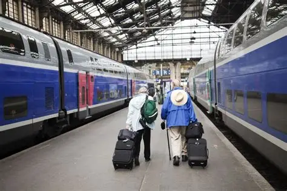

Spread love everywhere you go. ..
The only thing we never get enough of is love; and the only thing we never give enough of is love.
The only thing we never get enough of is love; and the only thing we never give enough of is love.
Running an airline is a normal job. Racing is more
Life is for service.
Strive not to be a success, but rather to be of value
Rail transportation in the Philippines is currently used mostly to transport passengers within Metro Manila and provinces of Laguna and Quezon, as well as a commuter service in the Bicol Region. Freight transport services once operated in the country, but these services were halted. However, there are plans to restore old freight services and build new lines. From a peak of 1,100 kilometers (680 mi),the country currently has a railway footprint of 533.14 kilometers (331.28 mi), of which only 129.85 kilometers (80.69 mi) are operational as of 2026, including all the urban rail lines. World War II, natural calamities, underspending, and neglect have all contributed to the decline of the Philippine railway network.[6] In the 2019 Global Competitiveness Report, the Philippines has the lowest efficiency score among other Asian countries
